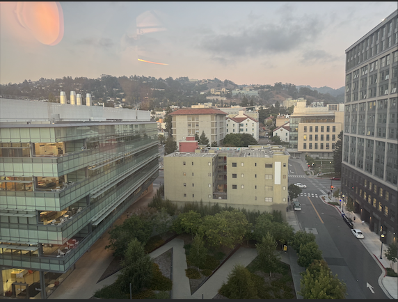
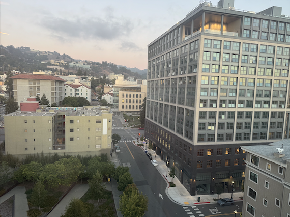
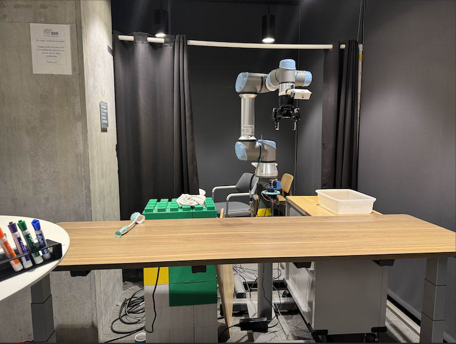
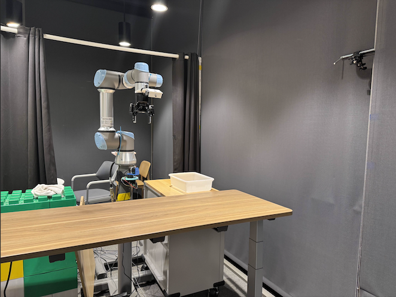
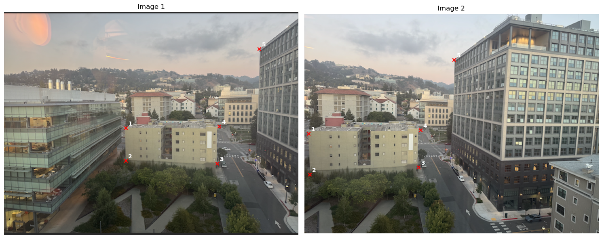
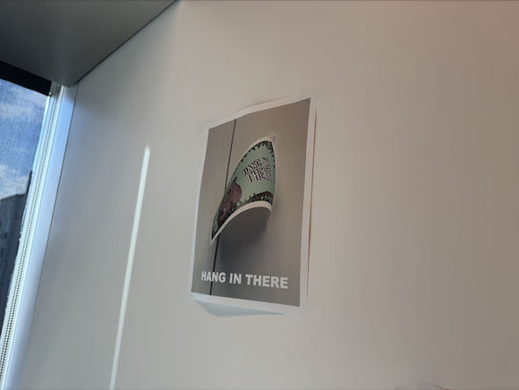
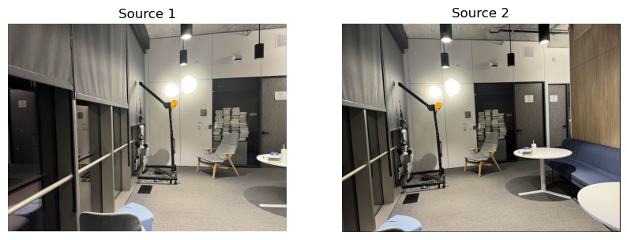

Project 0
Becoming Friends with Your Camera
Part 1: Selfie: The Wrong Way vs. The Right Way
Close-up Photo

Distant Photo

Part 2: Architectural Perspective Compression
Zoomed In Photo

Walked Closer Photo
Part 3: The Dolly Zoom
Dolly Zoom Effect

Project 1: Images of the Russian Empire
Introduction
In the early 1900s, Sergei Mikhailovich Prokudin-Gorskii pioneered color photography across the Russian Empire, capturing thousands of images with a three-filter RGB process. His glass plate negatives, later digitized by the Library of Congress, preserve a vivid record of Imperial Russia.
Part 1: Single Scale Alignment
The simplest approach to this problem is to use an extensive search method. To do so, all possible shifts are tried within a certain window_size, which I set to 15 pixels horizontally and vertically. All of these shifts were evaluated on either the L2 Norm or the Normalized Cross-Correlation (NCC) metric, and whichever displacement minimized/maximized the specific metric was used. Both methods were similarly useful in identifying the best displacement to use, but I have only shown the results for NCC here.
An issue I encountered was the borders on the image being variant. In order to solve this, I trimmed the border of each image by 50 pixels on all sides. This helped to ensure that the alignment process focused on the central features of the images rather than being skewed by border artifacts. This number was determined through trial and error.
Below are results using the basic alignment method.
cathedral.jpg
Red: (7, 1)
Blue: (-5, -2)
monastery.jpg

Red: (6, 1)
Blue: (3, -2)
tobolsk.jpg
Red: (4, 1)
Blue: (-3, -3)
Part 2: Image Pyramid Speedup
The method above works well for small images. However, when the image size becomes very large, this exhaustive search can take a very long time.
In order to solve this problem, we implement an image pyramid, where we create smaller versions of the image at multiple scales. We start by aligning the smallest images in the pyramid, which is computationally cheaper.
The displacement found at this level is then used as a starting point for aligning the next larger images, refining the search within a smaller window around the initial estimate. This process continues up the pyramid until we reach the original image size.
Many parameters were tuned in order to get the best results. The number of levels in the pyramid was set a variable amount, where the smallest image had a size of around 300 pixels. At each level, the image was downsampled by a factor of 3. The window size for the exhaustive search
at the level where the image size was the smallest was set to a larger value, as I felt that more exploration was needed at very small sizes. For every other level, the window size was very small to keep the runtime low. The same NCC metric was used for evaluating shifts at each level.
Below are the image results using the image pyramid speedup method.
cathedral.jpg
Red: (7, 1)
Blue: (-5, -2)
monastery.jpg

Red: (6, 1)
Blue: (3, -2)
tobolsk.jpg

Red: (4, 1)
Blue: (-3, -3)
church.tif

Red: (33, -8)
Blue: (-25, -4)
emir.tif

Red: (57, 17)
Blue: (-49, -24)
harvesters.tif

Red: (65, -3)
Blue: (-59, -17)
icon.tif
Red: (48, 5)
Blue: (-41, -17)
italil.tif

Red: (38, 15)
Blue: (-38, -21)
lastochikino.tif
Red: (78, -7)
Blue: (2, 2)
lugano.tif
Red: (52, -13)
Blue: (-41, 16)
melons.tif

Red: (96, 3)
Blue: (-81, -10)
self_portrait.tif

Red: (98, 8)
Blue: (-78, -29)
siren.tif

Red: (47, -19)
Blue: (-49, 6)
three_generations.tif

Red: (59, -3)
Blue: (-52, -13)
My Chosen Images
Below are three images I selected. The same parameters from above were used again.
sunset.tif

Red: (0, 46)
Blue: (0, 0)
gate.tif

Red: (62, 4)
Blue: (-26, -8)
mountain.tif
Red: (52, -13)
Blue: (-41, 16)
Project 2: Convolutions & Filters
Part 1: Fun with Filters!
Part 1.1: Convolutions from Scratch
I implemented convolution from scratch with four for loops and two for loops. I also implemented padding with zero-fill values. I compared my result with the built-in scipy.signal.convolve2d. I took a picture of myself (read as grayscale), applied a 9x9 box filter, and convolved with finite difference operators D_x and D_y.
All of the implementations yielded output images that looked identical to each other. The only difference was that the four loop implementation took 8 times longer to run than the two loop implementation. The scipy implementation was faster than both the two loop and four loop implementations.
Results
Original

Box 9x9
∂I/∂x
∂I/∂y
Code snippets
D_x = np.array([[ -1, 0, 1 ]], dtype=np.float64)
D_y = D_x.T
def padding(img: np.ndarray, pad_y: int, pad_x: int, value: float = 0.0) -> np.ndarray:
return np.pad(img, ((pad_y, pad_y), (pad_x, pad_x)), mode="constant", constant_values=value)
def convolution_4_loops(img: np.ndarray, kernel: np.ndarray) -> np.ndarray:
k = np.flipud(np.fliplr(kernel))
pad_y, pad_x = kernel.shape[0] // 2, kernel.shape[1] // 2
padded = padding(img, pad_y, pad_x, 0.0)
conv_img = np.zeros_like(img, dtype=np.float64)
for i in range(img.shape[0]):
for j in range(img.shape[1]):
acc = 0.0
for h in range(kernel.shape[0]):
for w in range(kernel.shape[1]):
acc += padded[i+h, j+w] * k[h, w]
conv_img[i, j] = acc
return conv_img
def convolution_2_loops(img: np.ndarray, kernel: np.ndarray) -> np.ndarray:
k = np.flipud(np.fliplr(kernel))
pad_y, pad_x = kernel.shape[0] // 2, kernel.shape[1] // 2
padded = padding(img, pad_y, pad_x, 0.0)
conv_img = np.zeros_like(img, dtype=np.float64)
for i in range(img.shape[0]):
for j in range(img.shape[1]):
region = padded[i:i+kernel.shape[0], j:j+kernel.shape[1]]
conv_img[i, j] = np.sum(region * k)
return conv_img
def box_filter(size: int) -> np.ndarray:
return np.ones((size, size), dtype=np.float64) / (size * size)
Part 1.2: Finite Difference Operator
I computed the partial derivatives in x and y of the cameraman image by convolving with D_x and D_y. I computed the gradient magnitude and a binarized edge image (choose an appropriate threshold qualitatively). I used scipy.signal.convolve2d for this part.
Results (Cameraman)
∂I/∂x (D_x)

∂I/∂y (D_y)

Gradient magnitude
Edge map (thresholded)

Code snippets
D_x = np.array([[ -1, 0, 1 ]], dtype=np.float64)
D_y = D_x.T
img = cv2.imread("cameraman.png", cv2.IMREAD_GRAYSCALE).astype(np.float64) / 255.0
img_x = convolve2d(img, D_x, mode="same", boundary="symm")
img_y = convolve2d(img, D_y, mode="same", boundary="symm")
grad_mag = np.hypot(img_x, img_y)
thresh = np.percentile(grad_mag, 94)
edges = grad_mag > threshPart 1.3: Derivative of Gaussian (DoG)
In the previous part, we saw that using only the difference operator to compute image gradients resulted in rather noisy outputs. To address this, I first smoothed the original image by convolving it with a Gaussian filter G (created by taking the outer product of a 1D Gaussian from cv2.getGaussianKernel() with its transpose). After blurring, I repeated the gradient computation as before by convolving the smoothed image with D_x and D_y to get the partial derivatives. The resulting gradients and edge maps are noticeably less noisy and the edges are more continuous compared to the unsmoothed version.
Next, instead of two separate convolutions (Gaussian smoothing then derivative), I created Derivative of Gaussian (DoG) filters by convolving the Gaussian filter with D_x and D_y to produce DoG_x and DoG_y. I then applied these DoG filters directly to the original image in a single convolution step. The results from this single-step DoG approach matched the two-step (smooth then differentiate) results, confirming their equivalence.
Below, I show visualizations of the DoG filters, as well as the resulting gradients, gradient magnitude, and edge maps. Smoothing with the Gaussian filter significantly reduces noise and produces cleaner, more meaningful edge detections compared to using the difference operator alone.
DoG Filters & Results
DoG filter (visual x)
DoG filter (visual y)
DoG ∗ D_x (result)

DoG ∗ D_y (result)
Gradient magnitude (DoG)

Edge Map
Code snippets
img = cv2.imread("cameraman.png", cv2.IMREAD_GRAYSCALE)
ksize = 9
sigma = 2.0
g1d = cv2.getGaussianKernel(ksize, sigma)
G = g1d @ g1d.T
blur = convolve2d(img, G, mode="same")
img_x = convolve2d(blur, D_x, mode="same")
img_y = convolve2d(blur, D_y, mode="same")
grad_mag = np.sqrt(img_x**2 + img_y**2)
DoGx = convolve2d(G, D_x, mode="full")
DoGy = convolve2d(G, D_y, mode="full")
img_x_dog = convolve2d(img, DoGx, mode="same")
img_y_dog = convolve2d(img, DoGy, mode="same")
grad_mag_dog = np.sqrt(img_x_dog**2 + img_y_dog**2)
thresh = 25
edges = (grad_mag_dog > thresh).astype(np.uint8) * 255
Part 2: Fun with Frequencies!
Part 2.1: Image "Sharpening" (Unsharp Mask)
The unsharp mask filter is a classic image sharpening technique that enhances edges and fine details. It works by first applying a blur filter (typically a Gaussian blur) to the original image, which removes high-frequency content (fine details and edges). The blurred image is then subtracted from the original, isolating the high-frequency components. These high frequencies are scaled by a sharpening amount (sometimes called "alpha" or "amount") and added back to the original image, resulting in a sharpened effect.
Mathematically, the process is:
Sharpened = Original + amount × (Original - Blurred)
How it works:
- Blurred image: Contains only the low-frequency (smooth) parts of the image.
- High-frequency image: The difference between the original and blurred image, highlighting edges and fine details.
- Sharpened image: The original image plus a scaled version of the high frequencies, making edges and details more prominent.
Below, I show the blurred, high-frequency, and sharpened versions of the Taj Mahal image, as well as others. A higher amount increases the sharpness and edge contrast, while a lower amount gives a subtler effect.
Original / Blurred / Sharpened Taj

Original / Blurred / Sharpened Leela (my dog!)
Original / Blurred / Sharpened Trees

Original / Blurred / Sharpened Campanile
Part 2.2: Hybrid Images
I created hybrid images by combining the low-frequency part of one image with the high-frequency part of another (Oliva et al., SIGGRAPH 2006). I aligned the images, chose cutoff frequencies, and showed the hybrid result (view near and far). I also showed Fourier magnitude visualizations.
I choose the cutoff frequencies by visualizing the Fourier magnitude visualizations and choosing the frequencies that are most visible in the hybrid image.
Derek & Cat

FFT Magnitude Visualization

Filters
Me & Koala
Aditi & Lion

Part 2.3: Gaussian and Laplacian Stacks
I implemented Gaussian and Laplacian stacks (stacks, not pyramids) by repeated blurring with no downsampling. I visualized the stacks for the Oraple example and reproduced the reference figure. I tuned the parameters to get the best results.
Apple and Orange Laplacian Stacks with Half-and-Half Blending

Part 2.4: Multiresolution Blending (the Oraple)
I blended two images using multiresolution blending (Burt & Adelson). I used stacks and a Gaussian stack for masks to smooth seams. I showed the apple/orange example and other creative blends: a desert and beach, and a galaxy and an eyeball. I tuned the parameters to get the best results.
Oraple: Inputs / Blended
Galaxy/Eyeball: Mask / Inputs / Blended

Galaxy/Eyeball: Laplacian Stack Visualization

Ocean/Sky: Inputs / Blended
Beach/Desert: Inputs / Blended
Project 3: Image Mosaics
A.1: Shoot the Pictures
Image Set 1: [Placeholder for first image set]
Image 1
Image 2
Image Set 2: [Placeholder for second image set]
Image 1
Image 2
A.2: Recover Homographies
Point Correspondences
Image with correspondences
System of Equations and Homography Matrix
System of equations matrix A:
[[ 2.36000e+02 2.25000e+02 1.00000e+00 0.00000e+00 0.00000e+00
0.00000e+00 -1.88800e+03 -1.80000e+03]
[ 0.00000e+00 0.00000e+00 0.00000e+00 2.36000e+02 2.25000e+02
1.00000e+00 -5.47520e+04 -5.22000e+04]
[ 2.36000e+02 2.89000e+02 1.00000e+00 0.00000e+00 0.00000e+00
0.00000e+00 -2.36000e+03 -2.89000e+03]
[ 0.00000e+00 0.00000e+00 0.00000e+00 2.36000e+02 2.89000e+02
1.00000e+00 -7.33960e+04 -8.98790e+04]
[ 4.14000e+02 2.94000e+02 1.00000e+00 0.00000e+00 0.00000e+00
0.00000e+00 -9.14940e+04 -6.49740e+04]
[ 0.00000e+00 0.00000e+00 0.00000e+00 4.14000e+02 2.94000e+02
1.00000e+00 -1.22958e+05 -8.73180e+04]
[ 4.18000e+02 2.22000e+02 1.00000e+00 0.00000e+00 0.00000e+00
0.00000e+00 -9.40500e+04 -4.99500e+04]
[ 0.00000e+00 0.00000e+00 0.00000e+00 4.18000e+02 2.22000e+02
1.00000e+00 -9.40500e+04 -4.99500e+04]
[ 4.96000e+02 7.10000e+01 1.00000e+00 0.00000e+00 0.00000e+00
0.00000e+00 -1.43840e+05 -2.05900e+04]
[ 0.00000e+00 0.00000e+00 0.00000e+00 4.96000e+02 7.10000e+01
1.00000e+00 -4.41440e+04 -6.31900e+03]]
System of equations vector b:
[ 8. 232. 10. 311. 221. 297. 225. 225. 290. 89.]
Recovered homography matrix H:
[[ 2.29470396e+00 2.17342768e-02 -5.33458435e+02]
[ 4.75179195e-01 1.88146329e+00 -1.83527466e+02]
[ 2.19820393e-03 -2.04606476e-06 1.00000000e+00]]A.3: Warp the Images (Hang In There!)
Interpolation Methods Comparison (Image 1)
Original Image 1
Nearest Neighbor

Bilinear Interpolation

Interpolation Methods Comparison (Image 2)
Original Image 2
Nearest Neighbor

Bilinear Interpolation

Discussion: Comparing Interpolation Methods
In both of the methods, there did not seem to be a difference in the results between nearest neighbor and bilinear interpolation. The results were the same. TODO: third image
A.4: Blend the Images into a Mosaic
Mosaic 1: Panorama
Source Images
Final Mosaic
Mosaic 2: EyeRobot
Source Images
Final Mosaic
Mosaic 3: Window
Source Images
Final Mosaic
Blending Procedure Explanation
To blend the images into a mosaic, I first warped each image into the mosaic coordinate frame using the computed homographies. For each warped image, I also generated an alpha mask indicating the valid (non-background) regions. The final mosaic was created by taking a weighted average of the pixel values from all warped images at each location, using the corresponding alpha masks as weights. This approach ensures smooth transitions and seamless blending in the overlapping regions. TODO: explain more